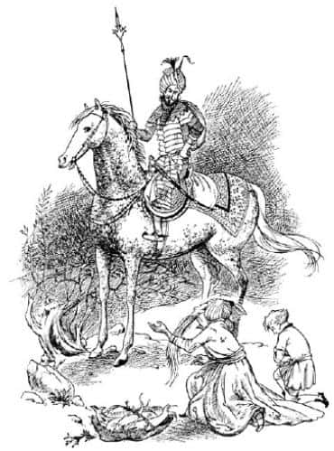

Shasta Seyahatlerine Nasıl Başladı?
Bu hikâye, altın çağlarda Yüce Kral Peter Narnia’yı yönetirken, erkek ve kız kardeşleri kral ve kraliçeyken, Calormen, Narnia ve aradaki topraklarda geçmiş bir hikâyedir.
O günlerde Calormen’in epeyce güneyinde, deniz kıyısındaki küçük bir koyda, Arsheesh adında fakir bir balıkçı ve ona baba diyen bir çocuk yaşıyordu. Çocuğun adı Shasta idi. Arsheesh genellikle sabahları kayığıyla balığa çıkar ve öğleden sonraları eşeğini arabaya koşup tuttuğu balıkları yükleyerek, satmak üzere yaklaşık bir mil güneydeki köye giderdi. Eğer satışlar iyi gitmişse eve az çok memnun gelir ve Shasta’ya bir şey söylemezdi, fakat işler kötü gitmişse onun bir hatasını bulur ve bazen de döverdi. Bir bahane bulmak kolaydı, çünkü Shasta’nın ağları yıkayıp tamir etmek, akşam yemeğini pişirmek ve birlikte yaşadıkları kulübeyi temizlemek gibi yapması gereken birçok işi vardı.
Shasta, evin güneyinde kalan hiçbir şeyle ilgilenmiyordu. Sadece bir-iki kez Arsheesh ile köye gitmişti ve orada ilgisini çekecek bir şeyin olmadığını biliyordu. Köyde sadece, uzun, kirli giysili, burnu yukarıya kıvrık tahta ayakkabıları olan, sakallı ve başları sarıklı, can sıkıcı konular üstüne birbirleriyle yavaş yavaş sohbet eden, babası gibi adamlar görmüştü. Fakat kuzeyde olan her şey çok ilgisini çekiyordu. Çünkü şimdiye kadar kimse o tarafa gitmemişti ve kendisinin de gitmesi yasaktı. Dışarıda yapayalnız oturup ağları tamir ederken, sık sık kuzeye doğru dayanılmaz bir arzuyla bakardı. Orada, yalnızca düzgün bir sırta doğru yükselen otluk bir bayırı ve onun ötesinde de belki birkaç kuşun uçtuğu gökyüzünden başka bir şey görmek mümkün değildi.
Arsheesh’in orada olduğu zamanlarda Shasta, “Baksana babacığım, şu tepenin ardında ne var?” diye sorardı. Eğer balıkçı kötü bir ruh hali içindeyse Shasta’nın kulağını çeker ve ona işine bakmasını söylerdi. Yok, eğer sakin bir durumdaysa, “Ey oğlum, boş sorularla aklını oyalama. Şairin dediği gibi, ‘İşine sıkı yapışmak zenginliğin kaynağıdır, kendilerini ilgilendirmeyen sorular soranlar aptallardır ve gemileriyle sefalet kayalıklarına çarparlar’” derdi.
Shasta’ya göre, tepenin ötesinde babasının ondan gizlemek istediği hoş bir sır vardı. Oysa balıkçının hiç oralı değilmiş gibi konuşması, kuzeyde ne olduğunu aslında kendisinin de bilmemesindendi. Merak da etmiyordu. Çok pratik bir zekâsı vardı.
Bir gün güneyden Shasta’nın daha önce gördüklerine benzemeyen bir adam çıkageldi. Yelesi ve kuyruğu dalgalanan, üzengileri ve dizginleri gümüş kakmalı, güçlü, benekli bir ata binmişti. İpek sarığının ortasından miğferinin ucu görünüyordu ve zincirden örülmüş bir zırh giymişti. Belinde eğri bir kılıç, sırtında pirinç kabartmalarıyla süslü yuvarlak bir kalkan asılıydı ve sağ elinde bir mızrak vardı. Yüzü esmerdi, fakat bu Shasta’yı şaşırtmamıştı çünkü Calormen halkı böyleydi; onu şaşırtan şey, kokulu yağ sürülmüş, parlayan, kıvırcık ve kırmızıya boyanmış sakalıydı. Arsheesh, yabancının çıplak kollarına taktığı altından, onun bir Tarkaan, yani ulu bir bey olduğunu anlamıştı ve önünde diz çöküp sakalı yere değene kadar eğilmiş, Shasta’ya da eğilmesi için işaret etmişti.

Yabancı onlara, o gece için misafir olmak istediğini söyledi. Tabii ki balıkçı reddetmeye cesaret edemedi. Sahip oldukları her şeyin en iyisi akşam yemeğinde Tarkaan’ın önüne konuldu, fakat bütün bunlar onu memnun etmeye yetmedi. Shasta, her zaman olduğu gibi, eline bir parça ekmek verilerek balıkçı tarafından, kulübeden dışarıya çıkarılmıştı. Shasta böyle zamanlarda genellikle eşekle birlikte, tavanı sazlarla örtülmüş ahırda uyurdu. Ancak bu kez henüz uyumak için çok erkendi. Kapıların ardından başkalarını dinlemenin yanlış bir şey olduğunu asla öğrenmemiş olan Shasta, yetişkinlerin ne konuştuğunu duyabilmek için kulübenin tahta duvarındaki bir çatlağa kulağını dayayarak oturdu ve dinlemeye başladı:
“Şimdi, ey ev sahibim” dedi Tarkaan, “şu senin oğlanı satın almayı düşünüyorum.”
“Ey sahip” diye cevapladı balıkçı – Shasta, onun yaltaklanan bir sesle konuşurken yüzüne yerleşen açgözlü ifadeyi biliyordu – “kendi etini ve tek çocuğunu köle olarak satmak için, hizmetçiniz fakir olsa bile ne fiyat koyabilir ki? Şairin dediği gibi, ‘Kan bağı çorbadan daha koyu, evlat yakuttan daha değerli’ değil midir?”
“Çok doğru” diye cevapladı misafir kuru bir sesle. “Fakat bir başka şair de, ‘Sağgörülü olanı aldatmaya çalışan, sırtını kamçıya açmaktadır şimdiden.’ dememiş mi? Yaşlı ağzından yanlış sözler dökülmesin. Bu çocuk belli ki senin öz oğlun değil, çünkü senin yanakların benimki kadar esmer ama çocuk, uzakta, kuzeyde yaşayan lanetli, fakat yakışıklı barbarlar gibi soluk ve beyaz tenli.”
“Ne de iyi söyledin” dedi balıkçı, “Kılıçlar kalkanlarla engellenir, fakat bilgeliğin gözleri her savunmayı deler! Öyleyse şunu bil ki ey benim heybetli misafirim, ben çok fakir olduğum için hiç evlenmedim ve hiç çocuğum olmadı. Tisroc, ömrü uzun olsun, değerli ve iyiliksever saltanatına başladığı yıl, dolunaylı bir gecede Tanrılar beni uyutmadılar. Bu nedenle, bu harap kulübedeki yatağımdan kalktım, suya ve aya bakıp, soğuk havayı içime çekerek serinlemek üzere sahile indim. O anda denizden gelen kürek seslerine benzeyen sesler ve ardından sanki birinin ağladığını duydum. Kısa bir süre sonra gelgitin oluşturduğu dalgalar kıyıya küçük bir kayık getirdi. İçinde çok az zaman önce ölmüş gibi görünen – çünkü vücudu hâlâ ılıktı – aşırı açlık ve susuzluk nedeniyle bir deri bir kemik kalmış bir adam, boş bir su torbası ve henüz hayatta olan bir bebek vardı. ‘Kuşku yok ki’ dedim kendi kendime, ‘bu bahtsızlar batan bir gemiden kurtulmuşlar ve Tanrıların izniyle yaşlı adam, çocuğu yaşatabilmek için bir şey yiyip içmemiş ve karaya yaklaştıklarında ölmüş.’ Böylece, Tanrıların yoksulluk çekenlere yardım edenleri ödüllendirmeyi unutmadıklarını hatırlayarak ve merhamet duyarak – çünkü hizmetçiniz yumuşak kalplidir—”
“Boş yere kendini övmeyi bırak” diye sözünü kesti Tarkaan. “Çocuğu kurtardığını bilmek yeter – ve herkesin görebileceği gibi, yediği günlük ekmeğin on kat fazlasını işgücü olarak ondan alıyorsun. Ona ne fiyat koyduğunu şimdi hemen söyle bana çünkü gevezeliklerinden usandım.”
“Çok akıllıca bir söz ettiniz” diye cevapladı Arsheesh, “Çocuğun benim için yaptığı işin değeri ölçülemez. Fiyat koyarken bunu da hesaba katmalıyız. Çünkü çocuğu satarsam, kuşkusuz onun işini yapacak başka birini satın almak ya da işe almak zorunda kalacağım.”
“Çocuk için on beş ay lirası öderim sana” dedi Tarkaan.
“On beş mi!” diye bağırdı Arsheesh, çığlıkla sızıldanma arası bir sesle. “On beş! Yaşlılığımda bana destek olsun ve göz ziyafeti çeksin diye mi? Tarkaan olsan bile benim ak sakalımla alay etme. Fiyatım yetmiş lira.”
Bu sırada Shasta kalkarak ayaklarının ucuna basarak uzaklaştı. İstediği her şeyi duymuştu, çünkü köyde adamların pazarlıklarını sık sık dinlemişti ve nasıl yapıldığını biliyordu. Arsheesh’in sonunda onu, on beş ay lirasından çok daha fazlasına ama yetmiş liradan daha az bir fiyata satacağına, fakat Tarkaan’la balıkçının anlaşmaya varmasının saatler alacağına tamamıyla emindi.
Shasta’nın, anne ve babamızın bizi köle olarak satacağını öğrendiğimizde, sizin ve benim hissedeceğimiz gibi hissettiğini düşünmemelisiniz. Birincisi, Shasta’nın yaşamı kölelerinkinden biraz daha iyiydi; bildiği kadarıyla, heybetli atıyla bu yabancı efendinin ona Arsheesh’ten daha iyi davranması mümkündü. İkincisi, kayıkta bulunması hikâyesi onu heyecanlandırmış ve ferahlamasına neden olmuştu. Sık sık huzursuzluk duyardı, çünkü ne kadar denese de balıkçıyı hiç sevememişti ve bir çocuğun babasını sevmesi gerektiğini biliyordu. Besbelli ki Arsheesh ile hiçbir akrabalığı yoktu. Bu, üzerinden büyük bir yükü kaldırmıştı. “Herhangi biri olmam mümkün” diye düşündü. “Belki de Tarkaan’ın oğluyum, ya da Tisroc’un – ömrü uzun olsun – oğlu, ya da bir Tanrının oğlu!”
Bunları düşünürken kulübenin önündeki çimenlikte ayakta duruyordu. Alacakaranlık hızla çökmekteydi. Daha şimdiden bir-iki yıldız çıkmıştı, fakat batıda günbatımının izleri hâlâ görülebiliyordu. Biraz ötede, eşeğin ahırının duvarındaki demir bir halkaya gevşekçe bağlanmış olan yabancının atı otlamaktaydı. Shasta yürüyerek yaklaştı ve atın boynunu okşadı. At otlamaya devam etti ve onu hiç umursamadı.
Sonra Shasta’nın aklına başka bir fikir geldi. “Tarkaan’ın nasıl bir adam olduğunu merak ediyorum” dedi yüksek sesle. “İyi kalpliyse şahane olacak. Ulu efendinin evindeki kölelerden bazılarının hemen hemen hiç işi yok. Güzel giysiler giyiyorlar ve her gün et yiyorlar. Belki beni savaşa götürür, onun hayatını kurtarırım. O zaman beni serbest bırakır ya da evlatlık olarak alır ve bana bir saray, atlı savaş arabası ve zırh verir. Ama korkunç zalim bir adam da olabilir. Beni zincire vurup tarlalarda çalışmaya gönderebilir. Keşke bilebilseydim. Bahse girerim ki bu at biliyordur, keşke söyleyebilseydi bana.”
At başını kaldırdı. Shasta onun ipek saten kadar yumuşak burnunu okşadı ve “Sen keşke konuşabilseydin yaşlı dostum” dedi.
Sonra bir an rüya gördüğünü sandı. Çünkü atın, alçak sesle olsa da “Ama ben konuşabilirim” dediğini duydu.
Shasta bakışlarını atın iri gözlerine dikti; gözleri şaşkınlıktan neredeyse onunki kadar büyüdü.
“Sen konuşmayı nasıl öğrendin?” diye sordu.
“Şşşşş! O kadar yüksek sesle değil” diye cevapladı At. “Geldiğim yerde hemen hemen bütün hayvanlar konuşur.”
“Orası da neresi?” diye sordu Shasta.
“Narnia” diye cevapladı At. “Mutlu ülke Narnia – süpürge otlarıyla kaplı dağlarıyla ve kekikli meralarıyla Narnia. Birçok nehri, küçük çağıldayan dereleriyle, yosunlu mağaralarıyla ve cücelerin çekiçleriyle çınlayan ormanlarıyla Narnia. Ah Narnia’nın o tatlı havası! Oradaki bir saatlik yaşam Calormen’deki bin yıldan daha iyidir” diyerek konuşmasını iç çekişe benzeyen bir kişnemeyle bitirmişti.
“Buraya nasıl geldin?” diye sordu Shasta.
“Kaçırıldım” dedi At. “Ya da çaldılar, ya da diyelim ki esir aldılar – nasıl istersen öyle kabul et. O zamanlar sadece bir taydım. Annem güneydeki bayırlarda, Archenland ve ötesinde dolaşmamam için beni uyarmıştı, ama ben onu dinlemedim. Ve Aslan’ın yelesi aşkına, budalalığımın cezasını ödedim. Bunca yıl gerçek kimliğimi gizleyerek ve onların atları gibi aptal ve akılsızmış gibi davranarak insanlara kölelik ettim.”
“Onlara kim olduğunu neden söylemedin?”
“O kadar aptal değilim de ondan. Konuştuğumu öğrenselerdi, beni panayırlarda teşhir ederler ve diğer atlardan daha sıkı korurlardı. Son kaçma fırsatım da yok olurdu.”
“Peki neden—” diye söze başladı Shasta, fakat At sözünü kesti.
“Bana bak” dedi, “boş sorularla zaman kaybetmemeliyiz. Sen, sahibim Tarkaan Anradin hakkında bilgi edinmek istiyorsun. Eee, kötüdür. Bana karşı pek kötü değildir, çünkü bir savaş atı kötü davranılmayacak kadar pahalıdır. Fakat yarın onun evinde köle olmaktansa, bu gece ölsen daha iyi.”
“Öyleyse kaçsam iyi olur” dedi Shasta, benzi solarak.
“Evet, iyi olur” dedi At. “Peki, neden benimle beraber olmasın?”
“Sen de mi kaçacaksın?” dedi Shasta.
“Evet, benimle gelirsen” diye cevapladı At. “Bu, ikimiz için de iyi bir fırsat. Anlayacağın, binicim olmadan kaçarsam beni gören herkes ‘başıboş bir at’ deyip mümkün olduğunca çabuk peşime düşer. Oysa bir biniciyle olursam, geçip gitme şansım var. Senin bana yardımın böyle olacak. Öte yandan, sen o gülünç iki bacağınla – insanların bacakları ne kadar da anlamsız! – fazla uzağa gidemeden, yakalanırsın. Fakat benim üstümde, bu ülkenin bütün atlarıyla gideceğinden daha uzağa gidebilirsin. Ben de sana böyle yardım edebilirim. Bu arada, sanırım ata binmesini biliyorsundur.”
“Oh, elbette” dedi Shasta. “En azından eşeğe bindim.”
“Neye bindin?” diye sordu At, aşırı bir şekilde küçümseyerek. En azından şöyle demek istemişti, ama gerçekte bir çeşit kişneme gibi çıkmıştı sesi: “Ha-ha-ha-ha neye bindin?” (Konuşan atların aksanları, öfkelendikleri zaman daha çok diğer atlarınkine benzer.)
“Bir başka deyişle” diye devam etti, “ata binmesini bilmiyorsun. İşte bu çok kötü. Yolda giderken sana öğretmem gerekecek. Madem binmeyi bilmiyorsun, düşmeyi biliyor musun bari?”
“Sanırım herkes düşebilir” dedi Shasta.
“Demek istediğim, düştükten sonra ağlamadan ayağa kalkıp yeniden binsen ve yine düşsen, o zaman da düşmekten korkmaz mısın?”
“Ben – denerim” dedi Shasta.
“Zavallı küçük hayvan” dedi At, daha nazik bir tonla.
“Senin sadece bir tay olduğunu unuttum. Zamanla seni iyi bir binici yapacağız. Ve şimdi – onlar uyuyana kadar yola çıkmamalıyız. Bu arada planlarımızı yapabiliriz. Tarkaan kuzeye, büyük şehir Tashbaan’a gidiyor ve Tisroc’un emrindekiler—”
“Bence” diye araya girdi Shasta epeyce şaşırmış bir sesle, “ömrü uzun olsun, dememiz gerekmez mi?”
“Neden?” diye sordu At. “Ben özgür bir Narnialıyım. Neden köleler ve aptallar gibi konuşayım ki? Onun sonsuza kadar yaşamasını istemiyorum. Ben istesem de istemesem de o, sonsuza kadar yaşamayacak. Ve ben senin de özgür kuzeyden olduğunu anlayabiliyorum. Aramızda bu güneyli lehçesiyle konuşmayalım artık. Şimdi planlarımıza geri dönelim. Dediğim gibi, sahibim kuzeye, Tashbaan’a doğru yola çıkmıştı.”
“Bu, güneye gitmemizin daha iyi olacağı anlamına mı geliyor?”
“Sanmıyorum” dedi At. “Biliyorsun ki beni de diğer atları gibi aptal ve akılsız sanıyor. Şimdi, ben gerçekten öyle olsaydım serbest kaldığım anda, ahırıma ve otlağıma, güneye doğru iki gün yolcululukla varabileceğim onun sarayına geri dönerdim. O, beni orada arayacaktır. Tek başıma kuzeye gideceğimi rüyasında bile göremez. Her neyse, muhtemelen son geçtiğimiz köyde onu gören birinin bizi buraya kadar takip ettiğini ve beni çaldığını düşünecektir.”
“Hurraaa!” dedi Shasta. “Öyleyse biz de kuzeye gideriz. Bütün yaşamım boyunca kuzeye gitmek istemiştim.”
“Elbette istedin” dedi At. “Bu, damarlarındaki kandan dolayı. Eminim sen gerçek bir kuzeylisin. Sesini yükseltme. Sanırım biraz sonra uykuya dalarlar.”
“Yavaşça sokulup baksam iyi olur” dedi Shasta.
“İyi fikir” dedi At, “fakat yakalanmamaya dikkat et.”
Şimdi her yer oldukça karanlıktı. Zorlukla işitilen, ancak Shasta’nın kendini bildiğinden bu yana gece gündüz dinlediği için fark ettiği dalgaların sesleri dışında, etrafta çıt yoktu. Kulübeden hiç ışık gelmiyordu. Yaklaştı. Ön tarafı dinledi, hiç ses yoktu. Tek pencerenin bulunduğu tarafa dolandığında, bir-iki saniye, yaşlı balıkçının o tanıdık zırıltılı horultusunu duydu. Her şey yolunda giderse, bu sesleri bir daha asla duymayacağını düşünmek tuhaf geliyordu. Shasta soluğunu tutarak ve biraz da üzgün, ancak memnun olduğundan daha az üzgün olarak, çimenlerin üstünden kayarcasına eşeğin ahırına gitti. El yordamıyla anahtarın saklı olduğunu bildiği yeri buldu, kapıyı açtı ve At’ın o geceliğine oraya kilitlenmiş olan eyerini ve koşum takımlarını buldu. Eğilip eşeğin burnunu öptü. “Seni de götüremediğimize üzgünüm” dedi.
“Sonunda gelebildin” dedi At yanına döndüğünde. “Neler olduğunu merak etmeye başlamıştım.”
“Ahırdan senin eşyalarını alıyordum” diye cevapladı Shasta. “Şimdi bana bunları nasıl yerleştireceğimi söyler misin?” Sonraki birkaç dakika Shasta koşum takımlarının ses çıkarmasını önlemeye çalışarak dikkatle işe koyuldu; At ona “Şu kolanı biraz daha sık” ya da “Aşağıda bir toka var” ya da “Üzengileri epeyce kısaltman gerekecek” gibi şeyler söylüyordu. Her şey bittiğinde At:
“Şimdi sadece görünüm için dizginleri de takmalıyız, fakat sen onları kullanmayacaksın. Eyerin kaşına bağla dizginleri; çok gevşek bağla ki başımı istediğim gibi hareket ettirebileyim. Ve şunu hep hatırla; dizginlere dokunmayacaksın.”
“Öyleyse, ne işe yarar onlar?” diye sordu Shasta.
“Genellikle beni yönlendirmek için” diye cevapladı At. “Fakat bu yolculukta tüm yönlendirmeyi kendim yapmayı tasarladığım için, sen ellerini lütfen kendine sakla. Ve bir şey daha var. Yelemi kavramanı istemiyorum.”
“Fakat” dedi Shasta. “Dizginleri ya da yeleni tutamazsam nereye tutunacağım ki?”
“Dizlerinle tutun” dedi At. “İyi biniciliğin sırrı budur. Dizlerini istediğin kadar bastır vücuduma, dik otur, kazık gibi dimdik; dirseklerini içeri çek. Bu arada mahmuzlara ne oldu?”
“Topuklarıma taktım elbette” dedi Shasta. “O kadarını da biliyorum.”
“Öyleyse çıkar ve eyer çantasına koy onları. Tashbaan’a ulaştığımızda belki satabiliriz. Hazır mısın? Sanırım şimdi binebilirsin.”
Başarısız bir denemeden sonra, “Oooh! Korkunç yükseksin” dedi Shasta soluk soluğa.
“Ben bir atım, hepsi bu” diye cevapladı At. “Üzerime çıkmaya çalıştığını gören herkes benim bir saman yığını olduğumu sanır! İşte, böylesi daha iyi. Şimdi dik otur ve dizlerin hakkında söylediklerimi hatırla. Yarışlar kazanıp süvari saldırılarına önderlik etmiş olan birinin eyerinde, senin gibi bir patates çuvalı olması bayağı tuhaf. Her neyse, gidiyoruz” diyerek hafifçe kıkırdayıp güldü.
At, gece yolculuğuna inanılmaz bir dikkatle başladı. İlk önce balıkçının kulübesinin hemen güneyine, orada denize karışan küçük nehre doğru yürüdü. Çamurda, güneye gidiyormuşçasına, çok belirgin nal izleri bırakmaya dikkat etti. Fakat nehrin ortasına gelir gelmez akıntıya karşı döndü ve kulübeden yaklaşık bir kilometre uzaklaşana kadar, nehrin geldiği yöne doğru suda yürüdü. Sonra hiç ayak izi bırakmayacağı taşlık bir yer bulup nehrin kuzey tarafından dışarı çıktı. Sonra rahvan adımlarını sürdürerek, kuzeye doğru kulübeye kadar gitti. O tek ağaç, eşeğin ahırı ve dere – gerçekte Shasta’nın tüm yaşamı boyunca bildiği her şey – yaz gecesinin kurşuni karanlığında gözden kaybolmuştu. Yokuş yukarı tırmanmışlardı ve şimdi, her zaman Shasta’nın bilinen dünyasının sınırı olan sırtın üzerindeydiler. Shasta önlerinde uzanan çayırlıktan ötesini göremiyordu. Sonsuz gibi görünüyordu ilerisi: Vahşi, ıssız ve özgür.
“Hey!” dedi At. “Dörtnala kalkmak için ne harika bir yer, ha?”
“Oh yapma, hayır” dedi Shasta. “Henüz değil. Nasıl olacağını bilmiyorum – lütfen At. Adını da bilmiyorum ki.”
“Breehy-hinny-brinny-hoohy-hah” dedi At.
“Bunu asla söyleyemem” dedi Shasta. “Sana Bree diyebilir miyim?”
“Elinden gelen buysa, öyle olsun” dedi At. “Ben sana ne diyeyim?”
“Adım Shasta”
“Hmmm” dedi Bree. “Hey, işte şimdi, söylenişi gerçekten çok zor bir isim. Fakat dörtnal konusuna gelince. Keşke tırıstan çok daha kolay olduğunu bilseydin, çünkü bir kalkıp bir oturmana gerek yoktur. Dizlerinle tutun ve gözlerinle kulaklarımın arasından tam karşıya bak. Yere bakma. Düşeceğini hissettiğinde sadece daha sıkı tutun ve daha dik otur. Hazır mısın? Şimdi; Narnia’ya ve kuzeye.”